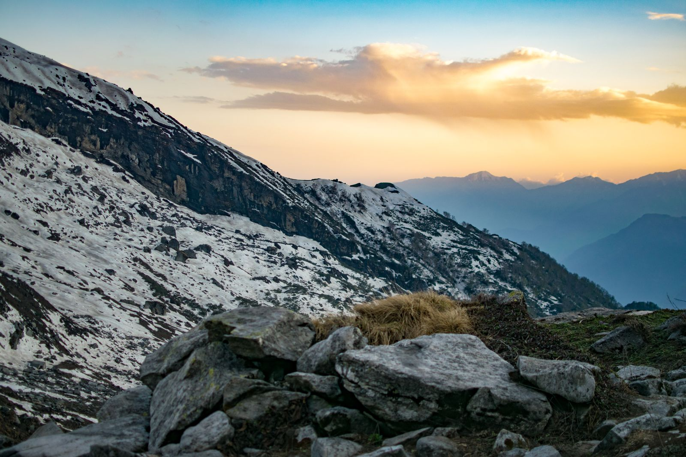
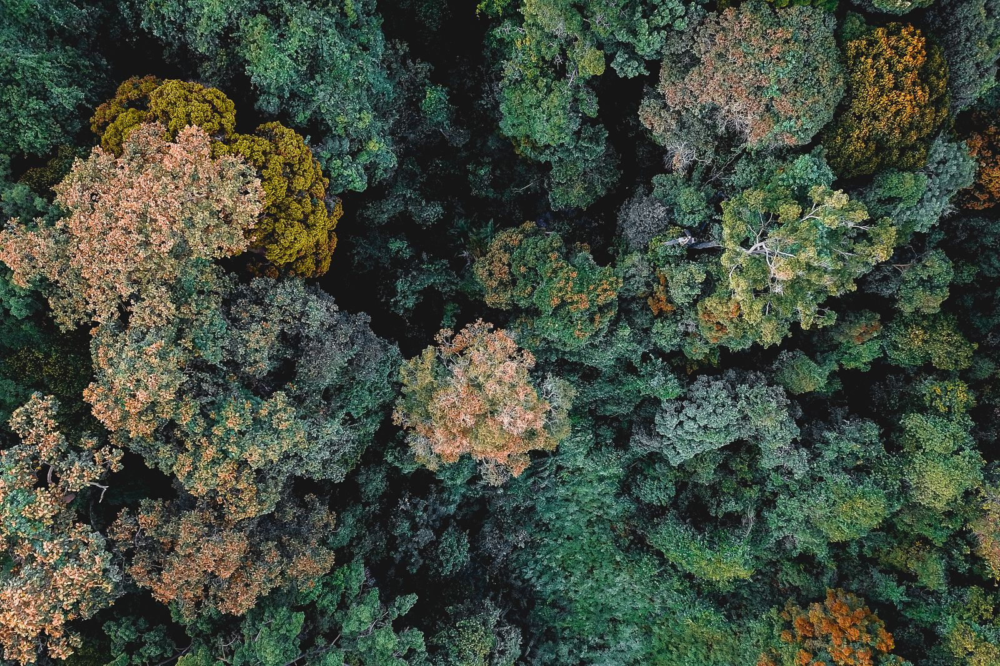
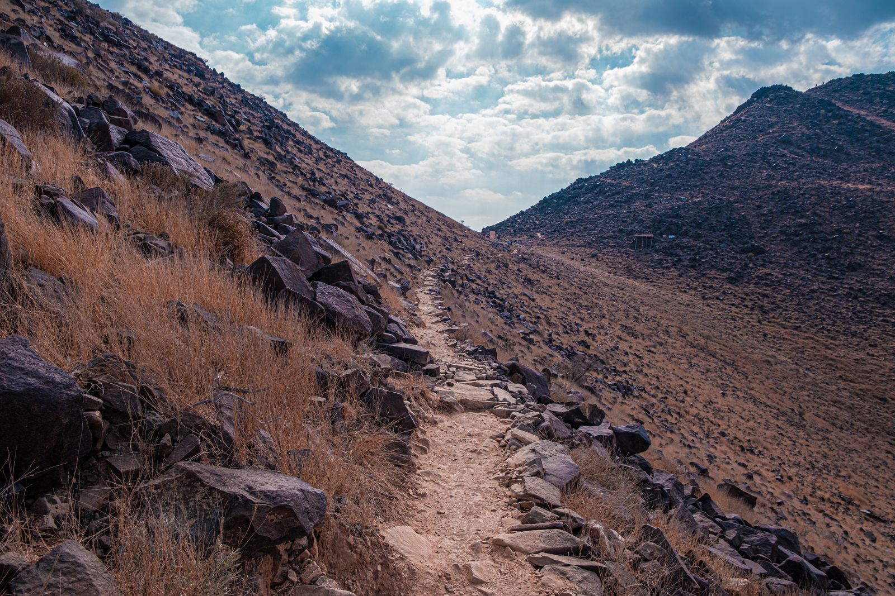
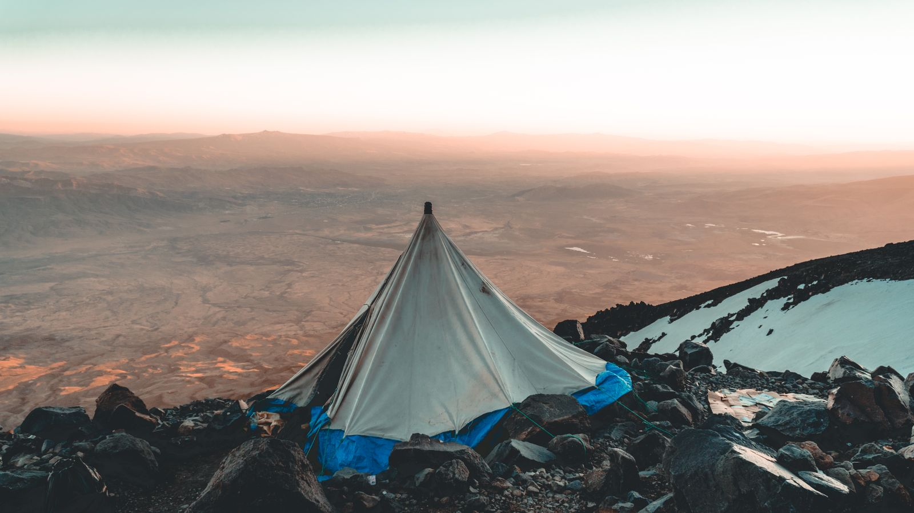

The Land
Basecamp in the White Mountains.
Every program is rooted in New Hampshire's White Mountain National Forest — terrain that ranges from hardwood valley trails to exposed alpine ridgeline above treeline, often in the same day.

Why This Terrain
Range, on purpose.
The White Mountains give us something rare: genuine alpine conditions within a day's reach of a trailhead. That range is deliberate — it lets us match the physical demand of a program to the group in front of us, from a first-time day hike to a multi-day traverse of the Presidential Range.
Weather here changes fast, and the terrain doesn't forgive carelessness. That's part of why the work is real.
Planning Your Visit
Logistics.
Getting Here
[Add directions and nearest airport — e.g. Manchester-Boston Regional Airport is roughly a 90-minute drive from basecamp.]
Where You'll Stay
[Add basecamp/lodging details — backcountry camping, a lodge, or a mix depending on program.]
Best Seasons
[Add seasonal notes — e.g. late spring through fall for most programs; winter programs by request.]
The Terrain
What a day out here looks like.




Ready When You Are
See it for yourself.
Browse upcoming programs on this terrain, or reach out with questions about logistics and fit.